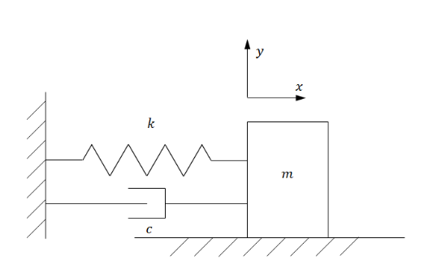
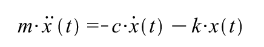

replit <<
Previous Next >> clang
MSD
學習要點(以下各項提問, 可以透過與 ChatGPT 的對話, 取得相關參考內容):
何謂微分方程式(Differential Equations)?何謂常微分方程式(Ordinary Differential Equations)?
為何要解出系統運動方程式(System Equations of Motion)的結果?
何謂牛頓運動定律?
工程師通常可以採甚麼方法解常微分方程式?
何謂數值分析(Numerical Analysis)?與計算機程式有何關聯?
工程師為什麼要在網頁中呈現系統的分析過程?
何謂 Euler's Method?
為什麼可以利用 Euler's Method 解常微分方程式?
何謂 Runge-Kutta Method?
Euler's Method 與 Runge-Kutta Method 有沒有關聯?
可以將 Euler's Method 視為一階 Runge-Kutta Method 嗎?
Runge-Kutta Method 是如何推導出來的?
為什麼要利用計算機程式語言, 採數值分析法解系統的運動方程式?
工程師在設計產品之前的理論分析重要嗎?
Mass-Spring-Damper 是一個典型的物理模型, 由質量-彈簧-阻尼器等三個元件組成, 若將彈簧其拉力與變形量成正比, 若假設阻尼器的阻力大小則與其受力方向的速度成正比, 根據牛頓運動定律, 就可以從物理模型的自由體圖導入系統的運動方程式. 接下來就要利用計算機程式, 解此一系統的微分方程式.
計算機程式課程主要從基本的 C 語法開始, 設法利用數值分析法解簡單的 mass-spring-damper 運動方程式, 並將質量運動的位移與速度, 以 Gnuplot 畫出後, 將 C 程式改寫為 Javascript, 以便能直接將質量運動的位移與速度圖顯示在網頁中.

in png:

in MathJax v3:
\(m.\ddot{x}(t) = -c.\dot{x}(t) - k.x(t)\)
Solve spring-mass-damper problem in Matlab.pdf (需要下載密碼)
接續 Javascript 基本數值分析方法的學習, 將採 Brython 語法改寫後, 希望能直接在網頁中透過類似 Python 的語法, 進行數值分析運算與繪圖. 最後再將 Brython 語法轉為 CPython 程式, 讓使用者可以直接在電腦操作系統中進行數值分析與繪圖.
上述從 C, Javascript, Brython 到 Python 的範例練習, 主要目的是希望呈現最基本的網際機電資整合系統設計流程, 讓機械設計工程師能夠將所設計的產品 3D 零組件完成後, 轉入機電模擬系統 (CoppeliaSim, Webots 或 Robodk), 設法編寫或運用既有的全球資訊網前後端程式架構, 結合近端的實體模型與全球資訊網端的機電控制系統模擬, 進行機械、電子、電機與資工領域工程師協同產品設計.
由於 CoppeliaSim、Webots 以及 Solvespace 都是採用 C++ 程式語言編寫, 且都屬開放源程式套件, 使用者若要更進一步了解此類工具的設計與配置方法, 可以自行透過進階內容學習.
Euler's Method(教學影片, 說明1, 說明2 in English):
https://tutorial.math.lamar.edu/classes/de/eulersmethod.aspx

針對常微分方程式: \(\frac{dy}{dx}=f(x,y)\)
假如 \(x_{n+1}\) 與 \(x_{n}\) 之間的距離非常接近, 則 \(\frac{y_{n+1}-y_{n}}{x_{n+1}-x_{n}}\approx f(x_{n},y_{n})\)
若取 \(h=x_{n+1}-x_{n}\) 作為 x 座標在每一次計算過程的增量值.
則可以在已知此一常微分方程式的起始值之後, 逐一透過 h 增量值計算此常微分方程式在各 x 座標點上的對應值:
\(y_{n+1}-y_{n}\approx f(x_{n},y_{n})h\)
此外, 只要在網頁中導入:
<script src="https://polyfill.io/v3/polyfill.min.js?features=es6"></script>
<script src="https://cdn.jsdelivr.net/npm/mathjax@3/es5/tex-mml-chtml.js"></script>
就可以利用 MathJax v3 的 \(\LaTeX\) 語法, 輸入所需要呈現的數學方程式.
Runge-Kutta Method:
Developments in Runge–Kutta Method to Solve Ordinary Differential Equations
https://www.me.psu.edu/cimbala/Learning/General/Runge_Kutta_Technique.pdf
NUMERICAL SOLUTION OF ORDINARY DIFFERENTIAL EQUATIONS (from one of the authors)
將 euler_gnuplot_msd_ex1.c 存入 downloads 目錄, 然後在 replit.nix 中進行 C 與 gnuplot 套件的設置:
replit.nix 設定內容:
{ pkgs }: {
deps = [
pkgs.qtile
pkgs.sudo
pkgs.clang_12
pkgs.ccls
pkgs.gdb
pkgs.gnumake
pkgs.gnuplot
];
}
euler_gnuplot_msd_ex1.c 程式內容:
// 包含標準輸出入程式庫的標頭文件
#include <stdio.h>
// 主函式
int main() {
// Open a file to write displacement and velocity data
FILE *outputFile = fopen("motion_data.txt", "w");
if (!outputFile) {
fprintf(stderr, "Failed to create data file.\n");
return 1;
}
// Simulate motion for 10 seconds and calculate displacement and velocity, while writing data to the file
double x = 0.2; // Initial displacement
double v = 0.0; // Initial velocity
double dt = 0.01; // Time step
double t = 0.0; // Time
while (t <= 10.0) {
double acceleration = (-10.0 * x - 0.5 * v) / 1.0; // Modified system parameters here
v += acceleration * dt;
x += v * dt;
fprintf(outputFile, "%lf %lf %lf\n", t, x, v);
t += dt;
}
// Close the data file
fclose(outputFile);
// Start a Gnuplot process using popen
FILE *gnuplotPipe = popen("gnuplot -persistent", "w");
if (!gnuplotPipe) {
fprintf(stderr, "Failed to start Gnuplot.\n");
return 1;
}
// Use Gnuplot plotting commands, specify font and output as PNG
fprintf(gnuplotPipe, "set terminal pngcairo enhanced font 'default,10' size 800,400\n");
fprintf(gnuplotPipe, "set output './../images/motion_plot.png'\n");
fprintf(gnuplotPipe, "set title 'Displacement and Velocity vs. Time'\n");
fprintf(gnuplotPipe, "set xlabel 'Time (s)'\n");
fprintf(gnuplotPipe, "set ylabel 'Displacement (m)'\n");
fprintf(gnuplotPipe, "plot 'motion_data.txt' using 1:2 with lines lw 2 title 'Displacement', \
'motion_data.txt' using 1:3 with lines lw 2 title 'Velocity'\n");
// Close the Gnuplot process
fprintf(gnuplotPipe, "exit\n");
pclose(gnuplotPipe);
return 0;
}
在 Shell 工具頁面:
cd downloads
cc euler_gnuplot_msd_ex1.c
經過編譯與連結後取得 a.out
然後利用 ./a.out 執行, 就可以在 images 目錄下得到 mass-spring-damper 微分運動方程式採 Euler's Method 模擬數值分析結果, motion_plot.png:

假如程式中需要使用數學函數運算則可 #include <math.h>, 並在編譯時納入 -lm, 亦即連結數程式庫.
cc ex_with_math.c -lm -o ex_with_math
然後以 ./ex_with_math 執行
replit <<
Previous Next >> clang